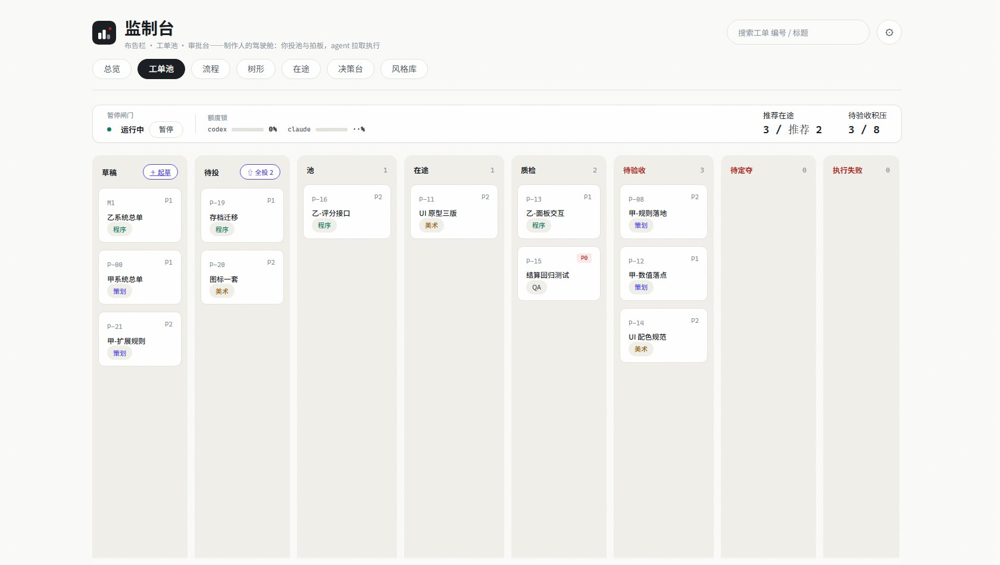
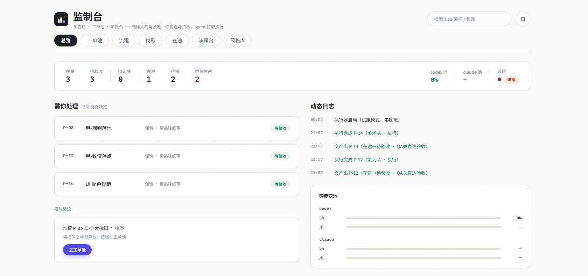

和 AI 结对开发久了会发现：真正稀缺的不是执行力，是人的判断力。如果每张任务都要人来分配、跟催、验收，AI 再快也快不过瓶颈在人。
监制台把这件事倒过来：软件生产被编排成 agent 流水线，人只做三件事——投池放行、争议拍板、品味终审。起草辅助、领单、执行、质检、委托验收、失败兜底、记账、通知，全部自动。它是 ticket-hub（派发制）的后继者：从"人推任务给 AI"进化为"AI 从池里拉任务"。

和 AI 结对开发久了会发现：真正稀缺的不是执行力，是人的判断力。如果每张任务都要人来分配、跟催、验收，AI 再快也快不过瓶颈在人。
监制台把这件事倒过来：软件生产被编排成 agent 流水线，人只做三件事——投池放行、争议拍板、品味终审。起草辅助、领单、执行、质检、委托验收、失败兜底、记账、通知，全部自动。它是 ticket-hub（派发制）的后继者：从"人推任务给 AI"进化为"AI 从池里拉任务"。
草稿、待投、池、在途、质检、待验收、待定夺、执行失败、完成、已归档——文件夹就是工单状态，改名就是流转，git 天然是它的历史与回滚。执行器每 15 秒扫池，空闲 agent 按职能（策划 / 程序 / 美术 / QA / 装配）自动领单执行；QA agent 只读复核，不过则进自修回环，超过上限自动上交人裁；失败单进独立分诊通道，绝不悬空。
总览页只回答一个问题："现在需要我决定什么？"——待验收、待定夺、投放建议，其余信息全部退到动态日志里。

让 agent 拥有对仓库的写权限，等于把风险设计当成第一优先级：试跑模式默认零 AI 调用，可以安全体验全流程；实弹模式默认锁定，解锁是显式操作加二次确认；额度双池带 5 小时与周双重阈值锁——烧穿周额度是灾难级事故，宁可流水线停摆；执行超时整树击杀，进失败态由人分诊。
做这套东西给我的最大启发：自动化系统的价值不取决于它能做多少，而取决于它的边界画得多清楚。
部署脚本一键安装，启动时跑四组全链路环境自检，降级或阻断都逐项写明修复动作；工单流转记录自动 git 记账。它和 ticket-hub 工单中台、排期工具组成我自己的一套研发管理工具链——同一个理念的三次落地：项目管理的本质不是盯人，是把状态变化设计成不需要盯的结构。